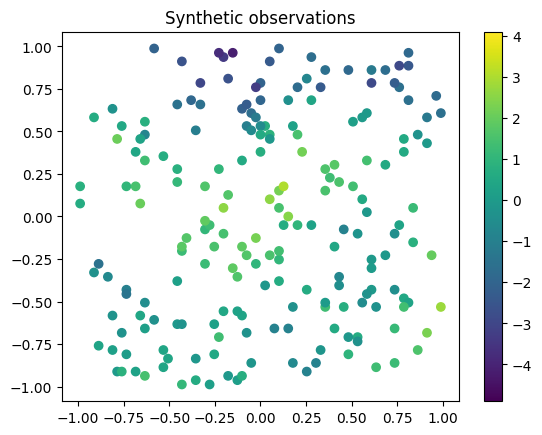
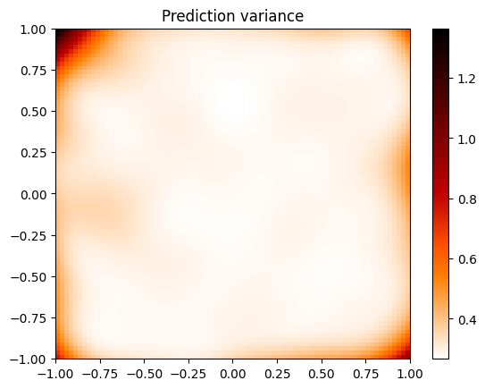

from geostat import GP, Model, Mesh, Parameters
import geostat
import geostat.kernel as krn
import matplotlib.pyplot as pp
import numpy as np
Overview
In this notebook we will: * Use a Gaussian process to generate synthetic data with known geospatial parameters. * Use a second Gaussian process to infer the geospatial parameters from the synthetic data. * Use the fitted Gaussian process to interpolate locations on a mesh.
Synthesizing data
We will synthesize data at mesh locations in a square centered on the origin.
First define mesh locations using a Mesh object. The nx argument specifies 80 mesh coordinates in the x direction, and keeps the pitch the same in the y direction (which results in 80 mesh coordinates in that direction as well).
Declare the terms of the spatial trend. The decorator converts the function trend_featurizer into a featurizer that Geostat can use. The normalize argument causes each feature to have zero mean and unit variance after being applied to mesh locations. It also adds a constant one feature. The method mesh.locations() returns an array of shape [N, 2], where N is the number of locations.
@geostat.featurizer(normalize=mesh.locations())
def trend_featurizer(x, y): return x, y, x*x, x*y, y*y
Model parameters are specified here, along with their values. The return value p is a namespace.
The covariance function has three terms:
TrendPriorspecifies a trend based ontrend_featurizer. InTrendPrior,alphaparameterizes the normal distribution prior for trend coefficients.SquaredExponential, a stationary covariance function.Noise, uncorrelated noise.
kernel = krn.TrendPrior(trend_featurizer, alpha=p.alpha) + \
krn.SquaredExponential(range=p.range, sill=p.sill) + \
krn.Noise(nugget=p.nugget)
Define a Gaussian process with zero mean and a covariance function given by kernel.
Instantiate a Model and then call generate to generate synthetic observations. The result mesh_obs has shape [N].
When the data is plotted, you can see an overall trend with some localized variations. The method mesh.slice() forms the observations into a 2d array suitable for use with pcolormesh.
vmin, vmax = mesh_obs.min(), mesh_obs.max()
meshx, meshy, mesh_obs_2d = mesh.slice(mesh_obs) # Each return value is a 2d array.
c = pp.pcolormesh(meshx, meshy, mesh_obs_2d, vmin=vmin, vmax=vmax)
pp.colorbar(c)
pp.title('Synthetic data')
pp.show()

Of these synthetic datapoints we'll sample just 200, with which we'll try to reconstruct the rest of the data.
sample_indices = np.random.choice(len(mesh_obs), [200], replace=False)
locs = mesh.locations()[sample_indices, :]
obs = mesh_obs[sample_indices]
c = pp.scatter(locs[:, 0], locs[:, 1], c=obs, vmin=vmin, vmax=vmax)
pp.colorbar(c)
pp.title('Synthetic observations')
pp.show()

Inferring parameters
Now we set the parameters in model to something arbitrary and see if the model can infer the correct parameters from the data, which consists of locs and obs. We don't expect alpha to converge to what it used to be, since TrendPrior generates only a small number of trend coefficients using alpha. However, sill, range, and nugget should all converge to something close.
(The None at the end suppresses extraneous output.)
[iter 50 ll -237.51 time 1.86 reg 0.00 alpha 0.61 sill 0.84 range 0.60 nugget 0.56]
[iter 100 ll -200.69 time 0.59 reg 0.00 alpha 0.37 sill 1.24 range 0.42 nugget 0.34]
[iter 150 ll -194.76 time 0.59 reg 0.00 alpha 0.23 sill 1.44 range 0.37 nugget 0.26]
[iter 200 ll -194.28 time 0.58 reg 0.00 alpha 0.17 sill 1.48 range 0.36 nugget 0.25]
[iter 250 ll -194.12 time 0.58 reg 0.00 alpha 0.13 sill 1.47 range 0.36 nugget 0.25]
[iter 300 ll -194.05 time 0.58 reg 0.00 alpha 0.11 sill 1.46 range 0.35 nugget 0.25]
[iter 350 ll -194.01 time 0.58 reg 0.00 alpha 0.09 sill 1.46 range 0.35 nugget 0.25]
[iter 400 ll -194.00 time 0.58 reg 0.00 alpha 0.09 sill 1.46 range 0.35 nugget 0.25]
[iter 450 ll -193.99 time 0.58 reg 0.00 alpha 0.08 sill 1.47 range 0.35 nugget 0.25]
[iter 500 ll -193.99 time 0.58 reg 0.00 alpha 0.08 sill 1.48 range 0.36 nugget 0.25]
Generating predictions
Call model to get predictions at the same mesh locations as before:
meshx, meshy, mean2d = mesh.slice(mean) # Each return value is a 2d array.
c = pp.pcolormesh(meshx, meshy, mean2d, vmin=vmin, vmax=vmax)
pp.colorbar(c)
pp.title('Prediction mean')
pp.show()

For comparison, here's the original synthetic data:
c = pp.pcolormesh(meshx, meshy, mesh_obs_2d, vmin=vmin, vmax=vmax)
pp.colorbar(c)
pp.title('Synthetic data')
pp.show()

And here's a plot of prediction variance, which accounts for, among other things, the noise that the model is unable to reconstruct.
meshx, meshy, var2d = mesh.slice(var) # Each return value is a 2d array.
c = pp.pcolormesh(meshx, meshy, var2d, cmap='gist_heat_r')
pp.colorbar(c)
pp.title('Prediction variance')
pp.show()
